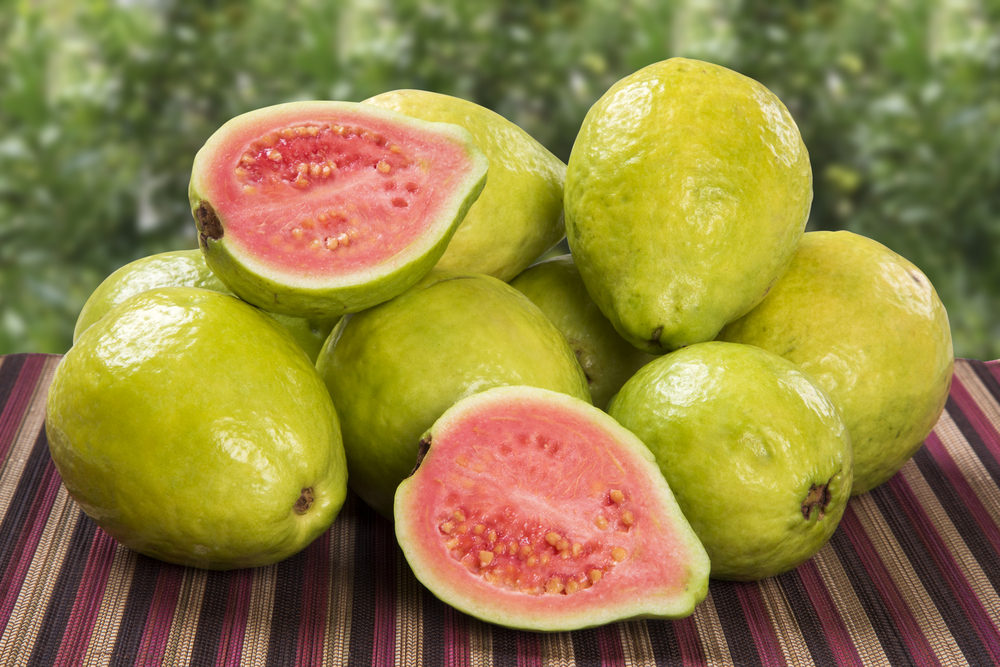

En este laboratorio vamos a repetir los pasos del laboratorio anterior para re-entrenar el modelo pero en esta ocasion usaremos una base de conocimiento diferente. El modelo que se va a generar puede usarse para iedntificar frutas a partir de imagenes.
Este laboratorio se ejecutara en un entorno de ejecucino diferente y nuevo. Puesto que cada entorno de ejecucion es independiente, necesitamos volver a descargar el repositorio y configurar el entorno que usaremos. Ademas de la diferencia en la base de conocimiento que usaremos para entrenar el modelo, este laboratorio expone tecnicas para interactuar con la maquina virtual y move archivos entre ella, Google Drive y el sistema local.
En este laboratorio vamos a usar TensorFlow para crear una aplicación que identifique objetos a partir de imagenes.
Vamos a utilzar Colaboratory porque la configuración del ecosistema de programación, incluyendo la librería tensorflow y el acceso a un procesador gráfico GPU no requieren de ninguna configuración avanzada. La librería tensorflow está disponible en el sistema de Colaboratory de forma directa. El siguiente enlace los llevará a una libreta donde podrán evaluar el código de este laboratorio: Sem3_Lab1_Entrenamiento.ipynb
import tensorflow as tf
print(tf.__version__)
En la libreta anterior, escriban el siguiente código que descarga los programas que se van a utilzar en este y el siguiente laboratorio. Los programas estaán alojados en un repositorio en GitHub. Clona el repositorio y una vez hecho, cambia la ruta a ese directorio, que es en el cual estaremos trabajando.
!git clone https://github.com/htapiagroup/tensorflow-for-lania
cd tensorflow-for-lania/
Antes de entrenar un modelo, necesitamos datos con las categorias que quisieramos que el modelo pudiera identificar. El conjunto de datos que usaremos esta alojado en una carpeta de GDrive a la que les proporcionare acceso. Para leer el contenido hay tres opciones
Vamos a usar el tercer metodo e interactuar directamente con GDrive desde el entorno de ejecucion.
El ejemplo siguiente muestra como montar Google Drive localmente usando un codigo de autorizacion.
from google.colab import drive
drive.mount("/content/gdrive")
Una vez autorizado el acceso, tendran a su disposicion acceso al espacio de GDrive asociado a su cuenta. Pueden ver el contenido en una celda de codigo escribiendo
ls /content/gdrive/My\ Drive/
El archivo que contiene la base de conocimiento para este modelo esta disponible siguiendo este enlace.
Asegurate de guardarlo en tu espacio de disco de GDrive y navega al directorio donde lo tienes en una celda de la libreta. Una vez identificada la localizacion en tu espacio de GDrive ejecuta el siguiente comando, modificando la ruta de acuerdo a la localizacion de tu archivo.
!unzip /content/gdrive/My\ Drive/Colab\ Notebooks/Datasets/eFIDS30.zip -d tf_files/
En el siguiente paso vamos a re-entrenar el modelo usando esta base de conocimiento.
Nuevamente usaremos MobileNet, una red neuronal ligera y eficiente. Esta red puede configurarse de dos formas:
Vamos a usar 224 y 0.50 como los parametros del modelo en este laboratorio. El siguiente script ejecuta el codigo a nivel de computadora, noten el comando magico %%bash en la primera linea. La diferencia de este codigo con el del laboratorio anterior es la ruta al archivo de imagenes tf_files/FIDS30
%%bash
IMAGE_SIZE=224
ARCHITECTURE="mobilenet_0.50_${IMAGE_SIZE}"
python -m scripts.retrain \
--bottleneck_dir=tf_files/bottlenecks \
--how_many_training_steps=500 \
--model_dir=tf_files/models/ \
--summaries_dir=tf_files/training_summaries/"${ARCHITECTURE}" \
--output_graph=tf_files/retrained_graph.pb \
--output_labels=tf_files/retrained_labels.txt \
--architecture="${ARCHITECTURE}" \
--image_dir=tf_files/FIDS30
Este paso puede demorar algunos minutos.
El script descarga un modelo pre-entrenado, agrega una nueva capa final y entrena esta capa en el conjunto de entrenamiento de las imagenes que descargaste previamente.
El modelo que acabamos de usar no tiene ninguna de las especies de flores que hemos especificado. Sin embargo, la informacion que hace posible que el modelo pueda distinguir entre 1000 clases de objetos puede usarse para nuestros propositos. Toda esta informacion es usada inicialmente para alimentar una red neuronal cuya ultima capa de clasificacion distingue entre las clases de flores.
El script de reentrenamiento guarda los datos en los siguientes archivos:
tf_files/retrained_graph.pb, que contiene una version de la red neuronal con la capa final reentrenada usando las nuevas categorias,tf_files/retrained_labels.txt, un archivo de texto que contiene las etiquetasVamos a usar en modelo re-entrenado para identificar la flor en la siguiente imagen

Esto puede lograrse con el siguiente codigo
!wget http://elproductor.com/wp-content/uploads/2018/12/guayaba-.jpg
%run scripts/label_image.py \
--graph=tf_files/retrained_graph.pb \
--image=guayaba-.jpg
!wget https://www.producemarketguide.com/sites/default/files/Commodities.tar/Commodities/strawberries_commodity-page.png
display(Image(filename="strawberries_commodity-page.png", width=64, height=64))
%run scripts/label_image.py \
--graph=tf_files/retrained_graph.pb \
--image=strawberries_commodity-page.png
!wget https://sportadictos.com/files/2016/01/Beneficios-guayaba.jpg
display(Image(filename="Beneficios-guayaba.jpg", width=224))
%run scripts/label_image.py \
--graph=tf_files/retrained_graph.pb \
--image=Beneficios-guayaba.jpg